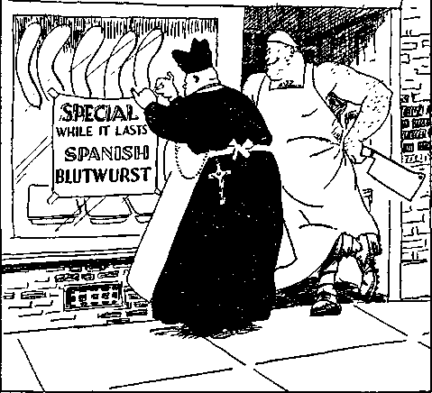

iiiiiiiiiiiiiiiiiiiiiiiiiiiiiiiiiiiiiiiiiiiiiiiiiiiiiiiiiiiiiiiiiiiiiiiiiiiiiiii
in this issue
lllllllllllllllllllllllllllilllllHIIIIIIillllllllllllllllllilllllilllllllllllll
every other WEDNESDAY
five cents a copy one dollar a year Canada & Foreign 1.25
Vol. XVIII-No. 455 February 24, 1937
---------------------------------• —■. ,, , .(gxj..
The Roman Hierarchy’s
Fascism (Catholic Action)
War Supplies for
Bolsen’s Summary
Hierarchy’s Military Operations
With an Intimate Knowledge
Pertinent Questions for the Honest 332
Not All Spanish Priests Fascists 336
Granada—Cordoba—
Hierarchy Going over the Brink 336
A Newsy Letter from Spain 338 Jehovah’s witnesses in Spain
Mistaken for Fascists 339 A Narrow Escape in Spain 340 Fascism in the Canaries
Petition to Governor of Trinidad 342 Mexico
Four-Fifths in Hands of Church 343
Mexico’s Apology (?) to Italy 343 “Persecutions” of Catholics 343
Jesuit Methods for Disorganizing 344 600 Fighters Dropped from Planes 344 Palestine
The Clouds over the Dead Sea 345
Arabs Sniping Passengers 345
Of Interest from South Africa 346
South Africa Empire Exhibition 346 Disobedience Brings
Broke Four Commandments
The Case of Judge Rutherford vs.
-
Published every other Wednesday by GOLDEN AGE PUBLISHING COMPANY, INC.
117 Adams Street, Brooklyn, N. Y., U. S. A.
Clayton J. Woodworth President Nathan H. Knorr Vice President
Charles E. Wagner Secretary and Treasurer
FIVE CENTS A COPY $1 a year, United States; $1.25 to Canada and all other countries.
Notice to Subscribers
Remittances : For your own safety, remit by postal or express money order. When coin or currency is lost in the ordinary mail*, there is no redress. Remittances from countries other than those named below may be made to the Brooklyn office, but only by international postal money order.
Receipt of a new or renewal subscription will be acknowledged only when requested. Notice of expiration is sent with the journal one month before subscription expires. Please renew promptly to avoid loss of copies.
Send change of address direct to us rather than to the post office. Your request should reach us at least two weeks before the date of issue with which it is to take effect. Send your old as well as the new address. Copies will not be forwarded by the post office to your new address unless extra postage is provided by you.
Published also in Bohemian, Danish, Dutch, Finnish, French. German, Greek, Japanese, Norwegian, Polish, Spanish, Swedish.
OmcEs for Other Countries
British 34 Craven Terrace, London, W. 2, England
Canadian 40 Irwin Avenue, Toronto 5. Ontario, Canada
Australasian 7 Beresford Road, Strathfield, N. S. W., Australia
South African Boston House, Cape Town, South Africa
Entered as second-class matter at Brooklyn, N. Y., under the Act of March 3, 1879.
Volume XVIII Brooklyn, N.Y., Wednesday, February 24, 1937 Number 455
The Roman Hierarchy’s War in Spain
HAVING brought to a successful issue its wars against the inhabitants of Germany, Austria and Ethiopia, the Roman Catholic Hierarchy has hit a snag in its efforts to readily mount once again upon the necks of the Catholic population of Spain. When the conspiracy between the Spanish church and the Spanish army was made it was fully expected that the war would be over in three days. That was eight months ago, and the war is still on.
Just 1,225 years, to the very day, from the time that the Moors, with the help of traitorous Spaniards, landed at La Linea, July 19, 711 (A.D.), and founded the Moroccan kingdom in southern Spain, traitorous Spaniards, with the aid of the Moors, landed at La Linea, July 19,1936, to fight the pope’s battles against the Spanish Republic.
“They give gifts to all whores; but thou givest thy gifts to all thy lovers, and hirest them, that they may come unto thee on every side for thy whoredom. And the contrary is in thee from other women in thy whoredoms, whereas none followeth thee to commit whoredoms: and in that thou givest a reward, and no reward is given unto thee; therefore thou art contrary. ’ ’—
Ezekiel 10: 33, 34.
John McGovern, member of Parliament for Shettleston, Scotland, one of the committee of the British House of Commons that visited Spain to ascertain actual conditions there, wrote in the Glasgow Evening Times of the efforts the Roman Hierarchy made to incite heathen aliens to destroy the Spanish Republic. He said:
Moors have been promised “a special place in paradise” for their share of the struggle, been blessed by the bishops, and have had Sacred Heart badges fixed to their rifles, with the “Saered Host” sewn to their ammunition bags with beads. I have seen for myself this foul evidence and have pictures of it.
John McGovern, writer of the foregoing, is a Catholic, but he is honest, courageous and truthful. He spent 27 days in Spain questioning members of trades unions, accountants, regional committees, bankers, lawyers, doctors, schoolmasters, b u s inessmen, soldiers, and peasants, and returned to his constituents and stated that the churches he had seen burned down in Spain were burned because they were Fascist strongholds ; that religion had been prostituted in Spain for crude, soulless, materialist ends; that priests were shot because they were engaged in Fascist propaganda ; that children had been killed in Madrid by bombs dropped from airplanes and that money, had been raised in Glasgow to buy the bombs used to kill them, and raised in Catholic churches at that. Inasmuch as Mr. McGovern is himself a Catholic it will be apparent to all that here is a courageous, trustworthy man. In his efforts to put these truths before his own people
he was shamefully interrupted and abused by those whose only knowledge of the subject is what they obtained from their father confessors, themselves prejudiced.
It is admitted by the officials of the Spanish Republic that some Catholic priests were shot for participating in Fascist plots against the state; but it is also of record that at least a dozen priests were shot by Franco’s men because they were honestly opposed to a Fascist state. These were executed without trial and solely for their antiFascist sympathies.
Lawrence A. Ferns-worth, foreign correspondent of the New York Times, himself a Roman Catholic, wrote to the Catholic magazine America from Barcelona, Spain. After acknowledging that the land literally runs with blood, spilled by both sides, he asked the pointed question:
Exclusive Picture of tile Hierarchy Suffering Martyrdom
But what about those persons, the rebels, or insurgents, or “defenders of the faith”, or whatever you might wish to call them, who likewise have killed their thousands upon thousands in cold blood, and, may I add, in treachery? Who have systematically killed the Republican and loyal officials wherever they have gone; have packed them in a bull ring to a number of more than a thousand and mowed them down with machine guns; have staged executions to music in the public plazas; have set up in some of the places they hold regularly established human slaughter-houses where men are killed like beasts? Is that not also murder? Does the commandment, “Thou shalt not kill,” not apply? Murder on the one side and murder on the other. That is the picture. Who is the guiltier ? Who is the better instructed ? This is no moment for the church to cry persecution, to raise an arrogant voice, to condemn. I tell you its hands are not clean in this matter of Spain. And itself stands at the judgment bar.
The New York Times, often weak, is to be commended for sending an honest, courageous Catholic like Fernsworth to the Spanish front.
The Newport Daily Express contains a picture of Cardinal Illundain blessing the flag of the rebels at Seville. The flag was presented by General Franco, rebel chieftain, who has said he is quite prepared to kill half the people in Spain to gain the Hierarchy’s ends.
Stating it just as it is, The Evening Star, Washington, D.C., gives a fine three-columnwide picture showing “Fascists Receive Priest’s Blessing”. The text beneath the picture and its caption contains the additional description:
Passing Avila, Spain, en route to the Madrid front, these Fascist insurgents under General Francisco Franco stopped to receive the blessing of an army priest.
Gil Robles, the brains of the forces undertaking the destruction of the Spanish Republic, entered a Jesuit school at the age of six, and at the age of 23 was a professor of law in the Canary Islands. In France, Belgium, Germany, Austria and the United States, he studied all the J esuit methods for overturning popular governments. He entered Spanish politics, and married the daughter of an aristocratic landowner. He is a capable speaker and writer and highly ambitious. He is described as pasty-faced and stout, with delicate hands.
Views of Seasoned Reporters
Edmond L. Taylor, of the Chicago Tribune, president of the Anglo-American Press Association of Paris, remarking that General Franco cannot win unaided, because the Spanish people are all against him, had the following to say of the Hierarchy’s army in Spain:
Franco’s soldiers are nothing more nor less than mad dogs. It is intolerable to see people who profess to be the saviors of occidental civilization act like wild beasts. The spirit that animates Franco’s soldiers is the spirit of a lynch mob. To date [December, 1936] more than 500,000 Spaniards have been sacrificed in this bloody fratricidal struggle. Most of them fell, not in battle, but at the hands of rebel executioners. The Foreign Legionnaires and the Moroccan soldiers perpetrate unspeakable cruelties. They are the first-line fighters. The Spanish Fascists bring up the rear, wreaking vengeance on those suspected of Leftist sympathies, workers, peasants, intellectuals, Protestants, etc.
A newspaper reporter, John T. Whitaker, in a copyrighted dispatch in the New York Tribune, said:
The rebels burned the wounded in the hospitals in Toledo alive and, after all the streets were cleared of resistance, they executed more than 2,000 civilians. “I killed 122 with this automatic pistol,” the leader of the Fascists told me bitterly. ‘ ‘ They imprisoned me and made me suffer and I tell you I enjoyed killing them. I shot them one by one, reloading this automatic until it was hot in the hand.”
“It’s just her way of praying for peace”
Jay Allen, in the London News Chroni-. de, resting from his duties as a war correspondent with the rebel armies in Spain, puts in question form the information that near Torrijos Republicans were hung back to back on a rope stretched between two trees; prisoners were compelled to jump from a fifth-story window; girl militiamen were turned over to the Moors, one to twenty Moors; at Toledo, where 600 Government wounded were in a hospital, Moors came in with hand-grenades and killed them in their beds; aged men were beaten to death with clubs; Masons were compelled to dig their own graves.
The Hierarchy’s army at Badajoz, Spain, had turned over to them by the Fascist Portuguese government Nicolas de Pablo, trade union leader, member of the Spanish Cortes. The Hierarchy’s army put this man in the bull ring, and there he was made to play the part of the bull, while Fascist picadors and matadors slowly tortured him to death.
The Madrid Bar Association protested to the so-called “civilized world” against the killing of 9,000 helpless workers and peasants by the Moors in Seville when they hurled grenades into their homes. Many women were also attacked.
Westbrook Pegler says of the failure of “Christianity” in Spain, and the new methods of atoning for this failure “with the blood of the betrayed”, that “Fascism undertakes to redeem their crime against Christianity by killing the flock”.
Pegler begins to suspect that there is something decayed about a brand of “Christianity” that produces such results. He recently visited Spain. On his return he said:
We read of the Moorish troops, who certainly are not Christians, but the blood enemies of Christianity, bearing the brunt of the attack on the government forces of Spain and participating in the shambles at Badajoz, where 1,800 native Spanish people were herded into the bull ring in batches and cut down in heaps by machine guns from the far end of the arena. ... It isn’t enough and it isn’t honest or fair to denounce as an atheist and Communist anyone in the United States who presumes to doubt that the slaughter at Badajoz, the employment of Mohammedans against Christians, and the generally brutal character of the Spaniards on both sides, represent a creditable demonstration of Christianity.
In a Swiss periodical the liberal theologian and conscientious objector, Professor Dr. L. Ragaz, published a series of articles about the fight in Spain. From one of the articles is selected the following:
And now the atrocities! Where the soldiers are concerned it is better for the reactionaries to keep still. Because right here the deeds of the “defenders of Christendom and order” should be first mentioned.
The slaughter of those two thousand people, men, women and children in Badajoz (Spain) by Fascist hordes, simply because they were on the side of the opponents, is one of the most appalling acts ever written on the pages of history. For the protection of “Christendom and order’’ those Foreign Legionnaires and Moors, who previously acted like veritable devils in the fall of 1934 in the Asturian mining district, were loosened once more upon that poverty-stricken country. And so what the People’s Front has done in retaliation of those deeds of violence is really insignificant. It was always thus: an aroused reaction is generally more cruel, more reckless, more inhuman, when taking revenge, than an ordinary revolution of the people.
What about the churches and monasteries, the clergy, monks and nuns ?
First of all, the real facts. At least two-thirds of the reported deeds of violence against them are barefaced lies. It remains, however, that churches and monasteries were desecrated, plundered and burned, clergy, monks and nuns killed, ridiculed and mistreated. This should not be condoned, any more than deeds of violence in worldly affairs, which have certainly occurred also. But there are three things to be determined:
First: The churches and monasteries in Spain have to a large extent openly sided with the Fascists. Those buildings were quite often gun and ammunition depots, from which people were shot at. Is that a lesser desecration than the sport made of chalices and priestly vestments?
Second: The churches and cloisters were allies and the strongest supports of the social and political slavery of the people for centuries and the chief causes of the boundless material and spiritual poverty crushing the people. In and around these churches and convents immense wealth was heaped up, and that in proportion to the poverty of the masses; and those treasures are now being used for the support of those who seek to perpetuate those evil conditions. Lisbon, the capital of the “Christian Corporative State of Portugal”, ruled by a dictator, has become their actual headquarters and the country itself the most important channel for the importing of guns and ammunition [for the Spanish rebels].
Third: Those churches and cloisters once lighted the fires of the Inquisition, and President Azana said, rightly, that the flames burning them down are only the reflection of the flames of that inquisition. They are the fiery tokens of a stupendous divine judgment upon such a church, fiery signs of warning, similar to those which occurred in Russia and Mexico.
Not only is the Boman Hierarchy waging this war with heathen Moors against its own Catholic population in Spain, but it is unwilling to let the American public know the truth about conditions. The newspapers of America are so generally under Roman control that they have become a stench.
When duly accredited representatives of the Spanish Republic sought to present their side of the Spanish situation to the people of this continent they were hounded from one city to another clear across the continent by those who parade the title of “Bishop”. This occurred in Montreal, Cleveland, Philadelphia, Cincinnati, and many other places all over the country, to the lasting shame and disgrace of the American people. In numerous places these noble men and women were denied auditoriums and the newspapers shamelessly took the side of the Hierarchy.
In Philadelphia J. Carroll McCormick, chancellor of the Catholic archdiocese of Philadelphia (Golden Age readers remember him), warned Catholics to stay away from the meeting, and the mayor of the city refused to receive the distinguished delegation.
At the Odd Fellows’ Temple in Cincinnati 500 persons attended the meeting of these Spanish patriots and statesmen, and, will you believe it? the Roman Hierarchy was so beastly small and mean, and the Cincinnati Times-Star was so licked into submission, that, bright and early Monday morning, after that Friday night meeting, it carried considerably more than two columns of simon-pure squawk and complaint by the Hierarchy because that meeting had been permitted. The Hierarchy tried to stage a big meeting itself, in protest, and got out 200 priests “and many laymen” (maybe another 200).
In the squawk the Catholic Hierarchy claim they are “defenders of democracy”. Why, sure! They would defend hell and the Devil himself to get control of anything. They now have (or did recently have) a majority both at West Point and at Annapolis, and when they get good and ready they intend to take over the U.S.A. in toto. Meantime, Roosevelt is helping the Hierarchy’s designs against America all he can.
•The Enquirer tried to stand for the truth, feebly, to be sure, and got abused roundly for it. The Post went down on all fours before the Hierarchy and gave even more space than the Times-Star and more sycophantic headlines. It was a grand exhibition of belly-crawling that must have brought joy to the Devil and his ministers.
A call for a mass meeting in Brooklyn, issued in the name of 25 Spanish societies, contains the following truthful statements:
Democracy in Peril. Women and children, their bodies torn to shreds, lie on the streets of Madrid. If this happens there, it can happen here. The American people, the foremost lovers of democracy, must no longer remain indifferent to the fate of democracy in Spain. The Spanish rebels, under Franco, are determined to make Spain Fascist even if they have to murder every woman and child.
Hitler and Mussolini are supplying the bombs and airplanes that attack Madrid by day and terrorize its civilian population by night. The Spanish people are united in defense of their beloved country, their freedom, their chosen democratic Republican government. The people in Spain are determined to die rather than surrender to the same forces that have crushed democracy in Italy and Germany.
Leaders in the Catholic Hierarchy’s spiritual revival in Spain, and some of their “ Pcnitentes”
Can Americans remain silent? Is America to say nothing when little children are slaughtered? The Spanish people are calling for help. Let us be the first to answer them! We call upon every liberty-loving American to join in a protest that will be heard around the world.
Spanish, Italian and English speakers addressed the meeting.
After all the blessings he has had from bishops and others, the murderer, General Franco, ought by now to be entitled to be called a “Reverend”, or, indeed, a “Most Reverend”, for he is doing that in which their souls delight.—John 8:44.
How strange that any man would dare use for himself a title that belongs only to God!
In a single air raid over Madrid his brave (?) Moorish and other heroes (?), fighting on behalf of the Roman Catholic Hierarchy, killed 63 persons, all but one of whom were women and children. It is easy to see why Franco has the “blessing” of the “Church” of the Devil. One large bomb dropped by' his fliers buried 200 women and children in the Madrid subway. Gas bombs have been used in a small way by Franco, and will probably be used on a larger scale as his cause gets more desperate.*
At Madrid, November 18, it was estimated that in the preceding ten days fifty tons of bombs had been dropped upon the city. Most of these were f rom G er man and Italian planes, received at Seville and Vigo in September, some weeks after the Spanish neutrality pact was signed by the Euio-pean powers. Flares thrown at night, and which water cannot extinguish, are part of the weapons used to destroy the citizens.
By December 9, according to the London Xchs ('Iiror.icle, it was estimated that at least one-third of the houses in Madrid had been destroyed by the German planes, manned by German aviators, which have been used to bomb the homes of the working classes. Countless women and children have been thus slain. Members of the British House of Commons who personally saw these massacres attempted to send Franco telegrams of protest, but could not get the messages forwarded.
“The defense of Toledo’s Alcazar by Fascist officers and cadets was described as an epic of human endurance and courage, as indeed it would have been but for one fact. The women
’ A British delegation of members of Parliament, all parties, thinks Franco has only 20,000 to 30,000 troops, mostly Moors, before Madrid and that the Government can pit against these between 80,000 and 200,000. In the latter are some French, German, Poles, British, and Italians. and children kept as hostages in those underground casemates were wives and children of the men of the Popular Front of Toledo. On July 19, just a few hours before the rebellion was scheduled to break out all over Spain, the Fascist garrison of the Alcazar raided workingclass districts of Toledo, while the men were at work, and drove the women and children into the enclosure of the fortress. The knowledge that these hostages were their own flesh and blood virtually paralyzed the will to attack the stronghold for weeks.”—The Epic News.
Frank H. Kluckhohn, able and honest correspondent of the New York Times, back in London from a stay of many weeks in Spain, claims that more than 100 Italian and German planes, more than 40 Italian tanks and plenty of Moorish troops, equipped with foreign ammunition, have been added to Franco’s army besieging Madrid. At the time Franco repudiated his solemn oath to act as his country’s defender, and became its attacker, he had but one plane, surreptitiously smuggled to him by a British Catholic. Then he got two more in Spanish Morocco, and finally fifteen all together.
All the principal dangers of the world are agreed that under no circumstances shall the legitimate Spanish government be able to buy arms, but, despite all promises to the contrary, it is all O.K. to send arms to the rebels. Thus, on October 22 the Italians sent 15 Caproni planes; on October 26 the Le Tre Marie and another ship left Genoa with munitions for the rebels; and on October 28 the Fanny Brunner, and on November 10 the Guido Brunner, left with cargoes of shells covered with layers of cement, sugar or flour. Three machines leave every night from Pisa. In the last few weeks the famous Ansaldo works sent 50 small tanks and 10 flame throwers. Coupled to these breaches of the Non-Intervention Pact is the plain statement of the Italian government that it does not intend to see the Spanish Republic survive.
Without any declaration of war, while the legitimate Spanish government was still in control of the island of Majorca (in the Balearic islands, 100 miles off the eastern coast of Spain), the government forces were bombed every day by Italian planes which flew direct from Italian territory. Though most of the aviators wore Spanish rebel uniforms, they boasted of their Italian nationality by wearing the Italian colors in scarves around their necks.
Count Rossi, an Italian, is virtually governor of the island. Italian bombs and airplanes are landed at Palma openly. All this is acceptable to the British government for the reason that the Roman Catholic Hierarchy is in control of its Foreign Office. Majorca is Franco’s base of supplies, and by now he has numerous submarines there, known to be on the way.
Indeed, a Havas dispatch from London declares that as early as October 19 fifteen German submarines passed through the Straits of Gibraltar under cover of darkness, and certainly with no good intentions against the legitimate Spanish government.
Gerald Grosvenor, special correspondent of the London News Chronicle, smuggled into the island of Majorca, aboard a private yacht, in a dispatch dated November 25, declared that 1,500 of the inhabitants have been shot dead by the Italians, that airplanes and munitions were constantly being delivered by Italy in Italian ships; that there are hundreds of planes in Majorca; that 90 percent of them are Italian and that the island is flooded with Italian airmen.
Death by ley de fuga (shooting prisoners under pretense that they are trying to escape) is common. The usual claims are made that Italy has no intention of annexing the isles. Anybody who would believe any statements, under oath, made by Fascist rulers, is an easy mark. Force, fraud, cruelty, tyranny, is its all.
Many would say that General Franco, oathbreaker, is very fortunate in having “neutral” (?) Fascist Portugal in his rear, to act as a constant source of materials and supplies, in his war upon his native Spain. Unknown products covered carefully by sheets of canvas rumble out of Portugal every day on their way to Spain. The bills are paid by checks drawn by Jose Maria Gil Robles, former head of the Catholic party in the Spanish Cortes.
Portugal is “neutral” in the war of Fascism against the Spanish Republic, but it is an odd kind of neutrality. Thousands of refugees from Badajos fled to Portugal as Fascists gained control of the city. The Portuguese government, being “neutral”, drove these refugees back to certain death. When they came back into Spain the Fascist troops seized them and slaughtered thousands of them, men, women and children. The wall of the cathedral where the massacre took place was clotted with blood to a height of ten feet when the Fascists got through. Headlines of some of the New York papers made it appear to the casual reader that this slaughter was by the troops of the legitimate government of Spain (miscalled “Reds”) instead of by the rebel Fascists.
One of the encouraging things for the Spanish Republic is the report, published in the London Neivs Chronicle of January 5, that the Moors in Spanish Morocco have broken out in rebellion against the press-gang methods employed to raise recruits for the Hierarchy’s army in Spain.
HIERARCHyAND FASCISMJNC?} baby i
OUR SLOGAN: "THE WORLD IS OURS."
The International Chain Store
The Cincinnati Enquirer comments editorially on the fact that there are no Russian infantry in Spain, but that there are 30,000 Italian and German troops fighting with the rebel armies, as well as many thousands of Moors and some Portuguese.
The American Guardian says of the German boys1:
These boys were ordered here by Hitler, and are not volunteers in any sense of the word. The German people do not know their sons are in Spain. Rebel soldiers constantly desert, and several airplanes have come over to the government in this manner, when the pilots calmly landed in government territory and stepped out of the planes with their hands in the air. One of these gave a report that the snobbish attitude taken by the Germans is making former Fascist sympathizers into Spanish patriots. The Germans are hated within a few days of their arrival at any place, he said, and feeling toward Franco is changing as the people realize he was responsible for bringing the Germans in.
The German-trained men are doing things that Franco’s Moors were not qualified to do. On one occasion they dropped 19 bombs on Madrid, killing 110 persons and wounding 135 more. Hotels and a general hospital were bombed, and a nine-story apartment house was completely destroyed. The dispatches say “most of the victims were women and children”. The oath-breaker and butcher, Franco, would be well pleased with this.
When reading sobstories about the pope’s illness or how “religion” is being “persecuted” in Spain, don’t forget the babykillers on the other side of the ledger.
Besides the skillful bombing, German mechanics are also doing what the priests and others who comprise the Hierarchy’s army know little or nothing about. The Manchester Guardian says:
Skilled mechanics are being enlisted in Berlin for work on tank production in the factories in the regions under the control of the Spanish rebels. Big wages and future employment are promised, and the strictest secrecy is enjoined. These mechanics are not even allowed to tell their wives where they are going. Special boxes are allotted to them in the post offices nearest their homes. If their wives wish to write to them, the letters are put into these boxes and are then forwarded through a special department of the German War Office. The wives also find the letters from their husbands in these boxes.
The airplanes for the pope’s army in Spain are flown from Germany by night, according to the aviator of one of these rebel planes who surrendered to the Spanish Government in Madrid. In at least two instances the pilots of rebel planes deserted to the Loyalist government, bringing their machines along with them. It is reported that 20 American planes found their way to Madrid via Mexico.
Late in October the German battleship Deutschland landed airplanes, tanks, flame throwers, artillery, antiaircraft guns and ammunition in Spanish Morocco, and at Cadiz, all within the rebel lines, according to the British war correspondent Atergo in the London Sunday Referee.
Nobody in Europe needs any proof of German conspiracy against the Spanish Republic. A Spanish officer who deserted from the Fascists stated it had even been fixed up beforehand that if Franco could not win otherwise, he was to get his own men in Seville to attack the Italian and German consulates, so as to provide an excuse for Germany to land marines from the 15 warships she has in Spanish waters.
The conspiracy is also self-evident from the haste with which both Germany and Italy refused to permit the legitimate government of Spain, elected by the people, to buy arms to put down a rebellion, but readily permitted the Hierarchy's troops to buy such arms, and were the first to recognize the Franco ‘‘government”, though without cabinet, foreign office, courts or the faintest resemblance of “civilized" modes of warfare.
Tn spite of all the wickedness of the Hitler crowd, there are still some true and honest and courageous hearts in Germany. At great risk to themselves some workmen in munition plants in Germany filled bombs with sawdust, and thus gave the poor people of Madrid a chance to laugh in the face of death.
“General Jose Sanjurjo, who had been chosen to head the revolt by the multimillionaire Spanish tobacco magnate, Juan March, spent several months last summer conferring in Berlin with Hitler and the German army staff. The Spanish ambassador to Rome during this time was similarly conferring with Mussolini and his staff. The Fascist dictator of Portugal, Oliveiro Salazar, was likewise in the plot.
“Huge war supplies were rushed into Spain ■with the connivance of Spanish customs officials sympathizing with the Fascists. Concrete placements for heavy artillery were constructed at strategic places. The upper strata of army officers openly expressed contempt for the republic. . . .
“In this line-up of the most reactionary, oppressive and antidemocratic elements the princes of the church have taken their stand. . . . At the present, due mainly to the position of the pope in unreservedly supporting the Fascist rebels, the Catholic Church in Spain is openly allied to these reactionary forces.”—James M. Dolsen, in Pittsburgh (Pa.) Press.
Franco claims that, with a few exceptions, “those who are dying for their God and their country” are Spaniards, but skeptics will suspect that most of them, when they show up with the other thieves in paradise (if they do), will wonder why it is no longer necessary to “Heil Hitler”.
Dr. Orts Gonzales, Spanish Protestant, resident of Malaga, Spain, on a visit to England declared that the Spanish rebel commander issued a military order, when a town is captured, “Go to the priest, and he will give you a list of the persons to be killed or put in jail.”
According to O. D. Gallagher, in the London Daily Express, this gentleman, just back from Spain, interviewed one Fascist chief who boasted that these chieftains did not take part in the front-line actions against the Spanish Democracy, but followed the Moors and the Italian and German troops with clean-up parties, and that he himself had slain 72 Government supporters with his own weapons. The priests furnished information as to whom to kill.
Writing of the fall of Iran, Jossleyn Hennessy, special correspondent of the London News Chronicle, describes a scene that occurred immediately after the capture of the international bridge by the rebel troops:
An American photographer who crossed a minute after its last defenders had been killed found the rebels dancing around and singing songs over the dead. One drew his bayonet and gashed a dead militiaman’s throat again and again, inviting the photographer to take his picture.
“In Saragossa, where a general strike was persisted in, 50 strikers were duly executed at the stroke of each hour. The Socialist deputy in that city was tied hand and foot in the middle of the street, while thousands lined the sidewalks in front of the ‘Church of Our Lady of Mercy’, and was then slowly crushed to death by a tank.
“To satisfy the blood-lust of the Moroccan troops, who are shut up in the city, beleaguered by the workers’ militia columns from Barcelona, a human corrida was held in the arena the Sunday before I write these lines. Fifty workers, men and women, were tied in a bunch, their bodies wrapped in red rags, and so left to face nine ferocious bulls, whose horns had been filed to razor sharpness for the occasion. For half an hour, the wild beasts were allowed to gore and toss —and then the martyrs were piled up, dead and wounded, and a huge pyre made of their bodies.
Whose Vicar J
“But Fascist terror finds its match in workers’ courage. I was present at Huesca while the workers were fighting, house to house, for the possession of the important key city. On the roof of the cathedral the Fascists had installed dozens of machine guns which held up the advance and cut heavy casualties into the ranks of the militia. There was no choice but to dislodge them. Two anarchosyndicalist workers loaded themselves with sacks of dynamite, 40 pounds in weight, and made a dash for the church, fuse in one hand and lighted cigarette in the other. One of them was hit, for he was seen to fall. He nevertheless crawled up to the church. There was a sharp crack as the living pillars of dynamite exploded. Then a roar, and the church wall caved in in a tornado of dust and powder, opening the way for a victorious loyalist advance.”—Pierre Van Paassen, Federated Press dispatch, on the Saragossa front in Spain.
Since the foregoing was written Van Paassen waJ hired by Hearst and sent to Russia. Why?
With an intimate knowledge of Spain, Leland Stowe, one-time foreign correspondent of the New York Herald-Tribune, in an address at St. Paul, Minn., said that in that unhappy land the Roman Catholic church and religious orders owned railroads, mines and banks and paid no taxes; they controlled education, and 45 percent of the people were illiterate; one five-hundredth of the people controlled 50 percent of the land; four million farm workers were always on the edge of starvation; only one-third the land was under cultivation.
In the first six years of the Republic 8,000 schools were opened. He considers Franco’s army as a foreign invasion. There were no radical members in the Spanish cabinet until after the second month of the attack by the Moors, Italians and others waging the conquest of the Republic by Fascism.
Robert Neville, New York Herald-Tribune correspondent, who spent a month at Granada, Spain, during the fighting there, in an address at Baltimore, Md., denied the atrocity stories circulated by Fascist sympathizers, but declared that, on the other hand, Franco’s army repeatedly bombed and shelled the workers’ section of the city and twice daily took civilians to the cemetery and there shot them.
Carleton Beals, for many years a newspaper correspondent in Spain, fully cognizant of the conditions leading to the present conspiracy against the Spanish Republic, at an address before the Foreign Policy Association in New York said:
The Spanish people were betrayed, not only at home, but abroad as well. The rebels are the moth-eaten aristocracy, the feudal army, great landowners and the feudal-political church combining because of the threat to their powers.
The Associated Press formally admits the bias of its dispatches from Spain in the following statement:
The only reason the word rebel is not used is because the AP has American correspondents in Spain who have been told at Fascist headquarters they would be punished if the term “rebel” were applied to the insurgent forces.
Speaking of this curious position Fred Hodgson, veteran newspaperman, said:
This is the first time I’ve ever heard a great news service admit in so many words that its dispatches are colored to suit an armed bandit’s orders. This simply means that every so-called “news” story from within the rebel lines can be discounted or denied completely.
The rebels have murdered three Paris newspaper correspondents for failing or refusing to send out untrue reports. Protestant pastors have been murdered by them at Saragossa, Granada, Cordoba, San Fernando, Ibaherando, and Santa Amalia.
It is getting more and more dangerous to lie, and harder and harder to get away with it. A dispatch from Toledo, Spain, sought to incur sympathy for the rebel cause by stating that “many old paintings had been destroyed by bullets or slashed by knives”. The dispatch was dated October 3, hut Joseph Cadden, of New York, was in that city September 19 and knew for a fact that the art treasures of the city were being carefully guarded.
Indeed, a People’s Committee for the Defense of Culture has been organized at Madrid; it is under the direction of a prominent Catholic editor, Jose Bergamin. Almost nothing that appears in the papers antagonistic to the Spanish Republic contains any truth at all.
Not only have the art treasures of Spain been carefully preserved, but the Republic’s Committee for the Protection of Art Treasures has done its work so thoroughly and well that the artistic wealth of Spain has actually increased, for the reason that numerous valuable works were found in convents which the inmates did not know were there, and of whose value they knew less.
When the rebels burned the palace of the Dukes of Alba the militiamen in charge remained in the burning palace until they had rescued most of its art treasures, and among these militiamen were some whose own homes were burning at that very time.
Writing in the Manchester Guardian2 a British socialist asks some questions that are in the minds of honest thinkers everywhere:
Is the right of the lawful Spanish Government to buy arms in self-defense against horrors that take us back to the Thirty Years’ War a mere technicality? Is it not true that the survival of democracy and civilization in Spain depends on the victory of the Government over its perjured generals and their Moorish savages and foreign mercenaries? Is nonintervention merely a camouflage for allowing Spanish democracy to be butchered to make a Fascist holiday rather than risk offending Hitler and Mussolini? Are we to put an end to the division—which already exists—of Europe into democracies and Fascist states by the simple expedient of the democracies’ surrendering piecemeal to the dictatorships, and re-enacting on the world stage the tragedy of Social Democracy in Germany?
Frederic B. Acosta, Spanish instructor in one of America’s largest universities, writing of conditions in his native land, said:
Stripped of political nomenclature (Leftist, Rightist, Fascist, or Nazi), the present civil war in Spain is a duel to the death between the common people fighting for their very lives against the return of ecclesiastical oppression, the despotism of the nobility, and the dissatisfied minority of army generals who aim to establish military dictatorship which will sweep away every vestige of democracy—thus reviving the old order.
Men have to be well convinced of the justice of their cause to die as did some of the Loyalists at Oviedo, who tied dynamite sticks into their belts, lit them and then leaped into the machinegun jiests of the rebels, killing themselves and many of their foes in the assault.
Referring to the powerful enemies of the Spanish people, the New York Daily News said:
The Zamora laws dissolved the Jesuit order in Spain and took its $30,000,000 worth of property; nationalized the Catholic Church’s $500,000,000 worth of property; and disestablished the Church. They cut down the Army radically, thus sending out a lot of spldiers to grumble and mumble in civilian life. And they decreed the parceling out of 52,000,000 acres of big estates among the peasants. Thus, in about a year of lawmaking, spurred on by the world panic of 1931-33, the Zamora government stabbed at the vital organs of the three biggest power groups in Spain—Church, Army, landed nobility.
The troubles of the immediate present are a grand rush of Jesuits, priests, nobility and landowners to get back in the saddle—using the army as a tool to do so. The men in the army see nothing to be gained by turning against their own flesh and blood, and so, in many instances, they turned against their own officers and either killed or imprisoned them. The people all know that the Roman Catholic Hierarchy were at the bottom of the conspiracy, hence many priests have been killed.
Butchery of
Anti-Clericals
Union, the organ of the pope’s army in Spain, has demanded the heads of all Protestants, with the result that several Protestant pastors have been shot by Franco’s hordes. They also destroyed the Protestant church at Jerez and turned the Granada mission house into a munitions magazine.
Have they ever done anything but mock and crush with violence the common man’s desire for something better?
The Manchester Guardian gives two columns detailing the butchery of anticlericals in La Linea, one mile from Gibraltar, at Almendralejo and other places. Doctors, hospital directors, shopkeepers and others suspected of being against the priests were put to death, 1,400 of them at Almendralejo in two days; 8,000 at Seville. Before being murdered by the Hierarchy’s soldiers, they are told they will be released if they sign checks for their entire bank accounts. The murderers then put them to death and use every penny of their savings. This is Fascism, Catholic Action, in actual practice.
Among the interesting things set forth by John J. McGovern, M.P. for Shettleston, Scotland, on his return from a trip of inspection to Spain (and all the more interesting because Mr. McGovern is himself a Roman Catholic) are the following:
The church owned land, railways, slum property, banks, telephone companies, engineering concerns, film production, cinemas, theaters, cafes, hotels, and even dog racing establishments and bull rings. Every time the dog chased the hare it made a profit for the “Church”. Every time the bull was stabbed to death or a toreador shed his blood, the Jesuits drew a profit. At Saragossa the Catholic Church owned a cabaret costing £500,000. The less said about that cabaret the better.
At an address in the Hotel Biltmore, New York, “Reverend” Francis X. Talbot, S. J., Jesuit author and editor of the Roman Catholic weekly America, made the statement that “Catholicism through all its centuries has been working to raise the lowest class to the highest”.3
Professor Pedro Villa Fernandez, instructor in Spanish at New York University, in an address in Yonkers declared that the present Papal war against the Spanish Republic is blamable to the Jesuits, who owned one-third of the land of the country and paid no taxes on it. In the thirty years from 1900 to 1930 the number of priests grew from 65,000 to 112,000; the 4,000 convents and monasteries were devouring the best of everything; the church sent $20,000,000 out of the country every year and yet 50 percent of the children had no schooling.
In 1900, when the church was in the saddle, the Spanish government appropriated only $8,000 for education, while in 1932 the Spanish Republic appropriated almost eleven times as much. Meantime the Spanish people were paying the bishop of Toledo six times as much salary as is paid to the president of the United States.
The nobles and military men are all strict Catholics, and in pursuit of Catholic Action the nobles paid 19c an acre taxes, while poor persons paid $7.24 per acre taxes for land lying alongside. There is a Spanish officer for every five soldiers, while in the United States there is but one for every thirty soldiers.
The Moroccan war was fought for mines owned by Jesuits and on which they never paid one cent of taxes, and was prolonged for years because the officers of regiments without soldiers sold ammunition to the Moors wherewith to kill Spanish soldiers. These are the men now fighting to overturn the government. American rackets are tame compared to those in Spain.”
With but one or two exceptions all the governments of the world want the Roman Catholic Hierarchy to win its wrar against the Spanish people, but the people, at heart, secretly hope that the people will win. The reason why the governments want the Hierarchy to win is that they want her support. They figure on forever deceiving, bulldozing, bluffing, bossing the people.
Future historians will marvel at the ease with which Italy and Germany bluffed Britain and France into not sending necessary arms to the legitimate Spanish government, but as soon as those two Fascist (Catholic Action) nations had recognized the rebels (whom they had been helping all along with planes and other war equipment) they boldly announced that henceforth they would supply such arms and ammunition openly to the rebel cause. How the British people can have any respect for their government after this betrayal into the hands of the pope is hard to understand.
Sir Peter Chalmers Mitchell, British citizen and resident in Malaga, Spain, in an interview in London said he had been through twenty air raids, that he is convinced the war could have been prevented altogether if the British government had not wanted Fascism to win in Spain, and that he believes a world struggle between Fascism and democracy is at hand, all because the British government, including the Labor wing, was too cowardly to intervene at the right time and save the world from “the inconceivably horrible mass killings of Fascism”.
It is worth noting that the counselor of the British embassy at Madrid is Mr. Ogilvie-Forbes, a pupil of the Jesuits at Beaumont, a former charge d’affaires in Mexico City and in Vatican City.
Under the caption “Germany Wins in Spain” Gordon Rend presents evidence that the Standard Oil crowd, General Motors and the American Telephone and Telegraph Company are more friendly to the rebels than to the Spanish Republic. That would not be in the least surprising. There is no sentiment in business.
The American League Against War and Fascism claims that a certain Captain William B. White is in command of a fleet of 10 bombing planes and 15 pursuit planes, all of American manufacture, and manned by American Fascists, now engaged in fighting against Spain’s legitimate government.
Mrs. James B. Donahue is accredited in the New York papers with financing this murder mission. At last reports none of these aviators had been killed, but plenty of Spanish mothers and their babies had been killed in the streets of Madrid.
Bert Acosta went over to fight on the side of the Spanish Republic. He stayed a month and when he came back v, as met down the Bay by highly indignant army officers demanding to know why the citizen of a republic should fight on the side of the citizens of a republic and not on the side of the Roman Catholic Hierarchy.'
Walter Duranty, world-famous for his description of things in Russia as they really were, is equally truthful about Spain. In a dispatch copyrighted by the North American Newspaper Alliance he said:
However much they may try to disguise it, their [the Spanish rebels’] movement was a frank attempt to restore or maintain the special privileges previously enjoyed by the military clique, the church, the landlords and the barons of industry, finance and business. In other words, they were trying to set the clock back, but, by a curious paradox, their action drove the clock forward helter-skelter and brought into being the very revolution against which they professed to be fighting.
William P. Carney, in a wireless dispatch to the New York Times, says of the struggle in Spain:
The Republicans are fighting for ideals of liberty long since secure in other lands; the Fascists, for traditions venerated for centuries. The rebellion of the military chiefs seems stupid, for they must have known their men were not with them and they should have been able to discern that the era of pronunciamentos is past.
Other dispatches from Spain show that in some instances when the grandiose military commanders issued pronunciamentos against the government the soldiers instantly put them to death. Also, when the same thing was done on shipboard the marines threw their officers into the sea.
On billboards and on the sides of army trucks in use in the Spanish Republic are painted the words, It is better to die standing than to live the rest of our lives on our knees.
The war correspondent Karl H. von Wiegand speaks of the strange omen of the ■war in Spain:
Russians, British, Belgians, Germans, French, Italians, Poles, Dutch,
“Papa is still seeck”
Swedes, and Austrians are fighting on both sides here.
Writing in Columbia Magazine, “Father” Wilfred Parsons, Jesuit, explains the Spanish situation as follows, and it has the self-evident marks of truth:
The great tragedy of Spain was that in the nineteenth century the working masses apostatized from the church, as Pope Pius X once remarked. And it is well to remember it was poverty, destitution and injustice which made them apostatize. They got to hate the Church because they hated the friends of the Church who exploited them and whom the Church did nothing to rebuke or correct.
Satan’s efforts to bring his kind of “peace and safety” in Spain may spread over all the earth.
Reverend “Father” Aguila, one-time priest of the Roman Catholic church in Spain, upon enlisting for service in the army of the Spanish Republic, made this statement:
I have been realizing for years that the church in Spain was a perversion of true Christianity. I have seen a rich abbot buy his own comfort with tens of thousands of pesetas and then lower the wages of the peasants on his farms. For these reasons I am going to fight for the cause of the Spanish people.
Vincent O’Connor, courageous Catholic, wrote the following letter, published in the Washington Post of November 16,1936:
A letter from the Rev. Urban Adelman, 0. M., Cap., says among other things . . there are those of us who believe that under the leadership of Gen. Franco are fighting all those who love Spain ...”
It is pertinent to remember that there are also many of us, including members of Father Adelman’s great communion, who believe that under the leadership of Gpn. Franco are fighting the renegades, the mercenaries, the ambitious and disappointed army officers, the Moors who love Spain so much that they fought Spanish armies to a standstill in the Riff,
the feudal landowners and the liberty-loving Italian and German Fascists. So well do these groups love Spain that they are exterminating the Spanish population which has dared to oppose them. So strong is their belief in democracy that they are attempting to wash out the result of a democratically conducted election which they lost by flooding the records with a torrent of innocent blood.
Yes, they would restore feudalism in Spain. They would maintain Spain’s high standing as one of the most illiterate white nations in the world. They would continue to rule over a nation of serfs while their puppet leaders continue the tradition of degeneracy which marked the Bourbon kingship and its nobility. In the name of civilization, saved from Moscow, economic poverty and a dead culture would again stalk Spain.
Fortunately for Spain and the world, the battle is far from lost. Even though the rebels conquer, which is not likely at the present time, many generations of the Spanish people will not forget those who murdered their relatives, destroyed their homes and their progress, and restored them to serfdom. The spark of liberty has been kindled by the fires of war. These moribund institutions which enslaved Spain will never regain the affection of those whom they now seek to destroy. The history of France provides a good example.
Not all Spanish priests are Fascists. Sometimes there is an honest man among them. Such a one is the Franciscan, Luis Sarasola. He came to America to deliver lectures in favor of the legitimate government of Spain, but on arrival in Montreal found an interdict launched against him, not first served upon him personally, as would have been the right course, but printed in a Montreal newspaper. Interviewed in New York “Father” Sarasola denied emphatically that he is either an apostate or a Communist. He said:
There are eminent Spanish Catholics—those who are best known in Spain for their great intellectual culture—who are condemning the civil war and who have placed themselves with a firm decision on the side of the legitimate government of the Republic. And, furthermore, there are very important regions in Spain, as, for instance, Catalonia and the Basque country, where the Catholics are fighting together with the Peoples Front. It has been said that the Basque country is the most Catholic country in Spain, where Christian religion is not an empty phrase as in most of the other Spanish provinces. And the Catalan Catholics, which have all joined the Peoples Front, are the most active and the most cultured Catholics in all Spain.
“Father” Sarasola lias a poor opinion of the Jesuits, despite the fact that the present Pope Pius XI confesses to one. Explaining why they were expelled from Spain, he said:
The Jesuits were exercising an extraordinary social and political influence in Spain; they were enormously wealthy people and they were always the friends of the rich. It is in that way that the Spanish people considered them—with reason or without reason—as the firmest enemies of the Republic and the aspirations of the workers. The Jesuits educated in their pompous colleges only the sons of the bourgeois and ruling classes. They were exploiting the tears and the sweat of the peoples. It was therefore not a religious question which was at the origin of their expulsion, but purely social and political reasons. Their presence was considered fatal and harmful to the prosperity and greatness of Spain.
You have heard all these names before. They are all famous cities. In preparation for the campaign now being carried on by the military traitor Franco, the depots for arms and ammunition in these cities were as follows: the church of San Geronimo in Granada, the Mosque cathedral in Cordoba, the church of Pilar in Saragossa, and the cathedral in Oviedo. Under the circumstances it might not be a half bad idea to accept the offer of the bishop of Marseilles, France, to have his church (and all the rest of them, to make sure) searched for arms and ammunition. Why should a gunman cry “Persecution”?
The best proof that France supplied no weapons to Spain is found in the fact that at Irun, within a half mile of the French border, all the men were killed, and all the women and children were massacred by the rebel forces, whereas the town could not have fallen into rebel hands if the defenders had been able to secure munitions. In many of the trenches the militiamen were wiped out to the last man. One trench was defended by only one woman in charge of a machine gun. She stood the rebels off until her ammunition was exhausted and then made her escape to safety.
Spanish resistance to Fascism (Big Church, Big Business and Big Landowners) surprised almost everybody. The government financed itself by raids on the churches, collecting 20,000,000 pesetas in one bishop’s palace; in another place 1,000,000 pesetas from a fleeing priest. The rebels were in command of Ecija, but when one of their planes came down just outside df town, the two aviators were killed by the people before they could be rescued by troops.
A friend in Britain tells of a man in his neighborhood who was a Catholic. On a certain date he went to “church” and the priest prayed for the success of the rebels in Spain. The man got up, walked out, and has not been back since, and does not intend to return. After a Britisher has had enough of anything, it is best not to try to feed him too much through a tube in his nose.
Greatest Prophet
A five-minute talk
by Judge Rutherford
APEOPHET is the servant of Jehovah God who utters God’s word as he is commanded. The detailed explanation is found in the book Prophecy, which you should carefully study. Moses was a prophet of God and was sent to Egypt to declare the purpose of God. God caused Moses to write concerning things that would come to pass in the far distant future; therefore Moses was a servant of God. Concerning Moses it is written, at Hebrews 3:5: 'Moses was faithful in all His house, as a servant, for a testimony of those things which were to be spoken after.’ Moses was a type foreshadowing the greatest of all prophets, to wit, Christ Jesus. When Moses, under the direction of Jehovah, addressed the Israelites, he said, in Deuteronomy 18:18,19, that God would raise up a Prophet, of whom Moses was a type, and would put the right words in the mouth of that Prophet, and that it should come to pass that all who would not obey that Prophet should die. These words wTere quoted by the apostle Peter, at Acts 3: 22. Who is that great Prophet, of whom Moses was a mere type? The Scripture answers, it is the Lord Jesus Christ, to whom God has committed all power in heaven and earth, and who is the rightful King. Concerning Him it is written, in Hebrews 3:1-3: “Wherefore, holy brethren, partakers of the heavenly calling, consider the Apostle and High Priest of our profession, Christ Jesus; who was faithful to him that appointed him, as also Moses was faithful in all his house. For this man was counted worthy of more glory than Moses, inasmuch as he who hath builded the house hath more honour than the house.”
The people have been erroneously taught that Jesus was sent to earth to serve merely as an example for men and that all who say they believe Jesus was a good man will at death go to heaven. God sent Jesus to earth primarily to be the vindicator of God’s name and word. Jesus said: “To this end was I born, and for this cause came I into the world, that I should bear witness unto the truth.” (John 18: 37) He is the Greatest Prophet and always speaks with absolute authority. The secondary purpose of His coming to earth was to redeem the human race from death, that men might live, and for that reason He says (John 10:10): “I am come that they might have life.” In Matthew 20:28: T came to give my life a ransom for many.’ And again, He said (John 14: 6 and 17:3), T am the way, the truth, and the life; and no man can come to God but by me.’ “And this is life eternal, that they might know thee the only true God, and Jesus Christ, whom thou hast sent.” At Acts 4:12 it is written that there is no other name under heaven whereby men may bo saved. These scriptures show that Jesus Christ is the Greatest Prophet and that His work is to vindicate Jehovah’s name and to administer life to those who do the will of God.
His emphatic statement is that those who believe and obey His commandments shall live, and that those who refuse to do so shall perish. (John 3:16, 36) Jesus at all times acts in obedience to the will of God, saying (Psalm 40: 8), “I delight to do thy will, O my God.” He also says (John 18:37): “Every one that is of the truth heareth my voice.” His relationship to this world must be the same relationship that others bear to this world if they would receive the blessings of life everlasting. Speaking of this world Jesus emphatically said (John 14:30; 18:36), ‘The Devil is the prince or invisible ruler of the nations of this world’; and then added, “My kingdom is not of this world.”
He urged upon His followers to continue to pray for the coming of God’s kingdom that His will might be done. It is incumbent, therefore, upon all persons to choose whether they will deny the Lord by ascribing salvation to men or earthly organizations or will ascribe salvation to God and Christ Jesus. There can be no middle ground, and no compromise, because, Jesus stated: ‘No man can serve two masters. He cannot serve God and mammon.’ (Matthew 6:24) This does not at all mean that the Christian must do violence to the laws of the land in which he lives, but it does mean that he must faithfully obey God’s law, and doing this he will always do right. Concerning those who attempt to follow in His footsteps, the Bible says (Acts 3:22,23): “For Moses truly said unto the fathers, A prophet shall the Lord your God raise up unto you of your brethren, like unto me; him shall ye hear [hearken to] in all things, whatsoever he shall say unto you. And it shall come to pass, that every soul, which will not hear that prophet, shall be destroyed from among the people.” For this reason, and because of its vital importance to all who would gain everlasting life, Jehovah’s witnesses now bring to the attention of the people the truth that God is supreme, and that Christ Jesus, His great Prophet, is the world’s Ruler and speaks with absolute authority. All who fail or refuse to give heed to His words make the fatal error that leads to destruction. All who give heed to and obey His commandments receive the everlasting blessings of life. Nothing could be of such great importance to the people now as the knowledge of the truth. Take your Bible and the books that are brought to you, and learn the truth.
[The interesting series of Bible talks of which the foregoing is one has been reproduced for the phonograph. These records may be run on the ordinary type of machine, and are being widely used for passing important Bible truths on to others. The Wateh Tower Bible & Tract Society, 117 Adams St., Brooklyn, N.Y., are the distributors, and inquiries regarding these records should be addressed to them.]
A Newsy Letter from Spain By Don Federico4
TWO brothers from Madrid had an interesting experience recently. It appears that most of the men folk of the near-by town of Villalba had gathered in or near the market square, and after we had had a rather good day, trotted along, and all wanted their money back. The books spoke of God. That wras enough! Who but their great enemy would do that: ‘Romanism, the “Church”—that’s Fascism.’
Finally the brothers were taken to the mayor, a Communist himself, who told the men our brothers were all right; but the crowd was too excited, and so the brothers had to be escorted back to the railway station. There the crowd lingered while trains came and left again, and the brothers could not get away. The men were armed with heavy sticks. So, finally, the civil guard was again called, and though they assisted our brethren, the latter were pursued even into the train itself and both received blows there. And this though the civil guard, which is usually much respected, accompanied them into the train.
Fortunately, the main party, including some sisters, had left by an earlier train. This showed the Lord’s directing, and surely the brothers would have fared worse but for His care.
A few days ago two other pioneers reported that in a village something similar happened to them, but, as it happened, one had already left in order to go to the post office of the town they were living in. Only one was left and, somehow, he managed to jump on his cycle and make a bolt, though he fell off once and the angry crowd chased him.
And today another case from Cadiz is reported. Here, as in every instance, the angry crowds think we are Fascists under a disguise. In this instance the brother writes that there happened to be a policeman present “and that saved me from bodily injury”. Then the brother was taken from one police station to another and finally released.
Just watch events in Spain; they’ll be interesting in the near future. We’re sitting on a bubble that’s likely to burst any moment, but we don’t know when or how! The forces are about equally divided. On the one hand, all those who use the time-worn slogan of “Order, Family, Country and God”—which, of course, means nothing else than organized anarchy under the cloak of religion. And on the other, the working classes, who, two years ago, were cheated out of what the republic had brought them, and now happen to be on top.
The revelations of what happened in October, 1934, in Asturias equal anything that may have happened in the Dark Ages. The Foreign Legion was called in and literally sacked towns and villages. Hence the anger of the Left element.
If the right wing again get control, we’ll get Hitlerism, with a vengeance! Everything here was planned before the last elections to establish it on the German model; everything was ready: lists of people to be deported, papers to be closed, and what not. However, we’ve escaped for the time being.
Whether we shall fare much better if the extreme left wing, the Communists, gain complete power jQziien sabe?5 as the Spaniards say. But there was something rather comical. We all know that one section of the Communists are the tool of the Jesuits. They were offered, I forget how many millions, and accepted them, to vote for the right wing. And then, at the last minute, they did the dirty on their bosses and joined the left “bloc”. Of course, everybody knows this. All that has been published in The Golden Age about Communism’s being the tool of Jesuitism is correct. We see it under our very eyes here. But here Communism stands for advanced Socialism, and it is rather what they here call “Syndicalism” that is and always has been the wedge to divide the workers. But the people are getting their eyes open and are or seem determined to maintain a united front at all costs.
Meanwhile the Fascists and their allies are trying by every means to cause riots in the streets, in order that the government, to suppress them, is obliged to turn the guns on the people and thus lose their support. Only the other day the secretary of the bishop said, in the hearing of a personal friend of mine: “We tried to prevent the Cortes from meeting. We've failed in that. Now there’s only one chance for u.s: 'provocar el chocpie en las calles’” (bring about fighting in the streets).
And so, almost daily, we hear of some politic’s n or other public figure being murdered or C’is being attempted. Shots come from any (p.urier. The Fascists say it is the workers; the latter say it is the Fascists; and so the fighting starts. And frequently, probably in every case, when workmen are caught with their membership tickets of some workmen’s organization in their pockets they are merely the paid instruments of the Fascists, in other words, a kind of “agent provocateur”.
We need not be surprised at that. The English press reports that the Nazis intend starting a daily in London which would ostensibly be against Hitler and champion the cause of the refugees from the Brown Tyranny. But it would just be a means of getting information.
In Spain the German consulates all work under and are literally branches of Nazism. German Jews and other Germans of liberal opinions are denounced to the consuls by “agents provocateurs” (among whom there are even some Jews!), and then summoned to appear at the consulate to have their passport examined. They hand in their passport, and after a few minutes are told, “Your passport has been withdrawn from you.” If they fail to present themselves, the consulates have an even worse weapon: they just advise the Spanish authorities that so-and-so is going about with a false German passport.
There is nothing too mean or too dirty for those madmen to do!
By the way, on Sunday last the RoyalistCatholic paper, ABC, published an article by Calvo Sotelo, one-time minister under the dictatorship of Primo de Rivera, advocating “Social Justice”. Well, we know which way the wind is blowing, and this will all go to confirm what you have recently said on the subject.
Jehovah’s witnesses in Spain Mistaken for Fascists**
TF Satan cannot get at Jehovah’s witnesses one way, ho gets at them another; and although in the following episode the clergy were not directly responsible, the slimy work of the Fascists and the terrible ignorance and stupidity resultant from a Catholic regime prompted the attack. As The Golden Age said recently, Satan, ever the mimic, is endeavoring to divide the people into his two camps: the Catholic or the Socialistic-Communistic.
With Antonio I left Zaragoza on a trip to some villages, and decided to work a village called Mediana on the way. First call I placed three booklets; but a few minutes later women’s voices were raised in a mocking, angry tone. But rather than waste time arguing I continued on till while witnessing in a shop the woman who had taken the three booklets came in and loudly demanded her money back, saying that we were Fascist agents and against the present Spanish Republic. All the evidence she had was that the booklets spoke of God and Christ! Quite a crowd of women were now in the narrow streets, and more leaned out of the windows.
I carried on till the town crier came up and told me to clear out of the village; otherwise he’d fetch the Civil Guards, who would pop me into jail. Of course, I refused to leave, and later the Guards arrived. We went to the Cuartel, where also Antonio was brought. The sergeant carefully examined the booklets and questioned us. Finally he said he could see nothing wrong at all, but as we had been denounced by the village he would have to look into it further. He then told me to take a letter to the lieutenant at the nearest town, who could decide better the legality of our work. He was Catholic, but reasonable and sympathetic.
So we left the village, Antonio and I, and walked with our bicycles along the muddy, rutted cart-track which would take us to the secondary road. Struggling along we saw several coatless youths running along in the fields parallel to us; and soon a man and some boys came up behind us. They all converged at one point, over twenty of them; and two seized our arms, accusing us of being Fascist propagandists. Antonio attempted an explanation; but they were past being reasonable. Some kids threatened us with lumps of rock, and one lad was very bold with his pitchfork!
Antonio’s bag was pulled off the bike, and the books were emptied out on the bank. The literature in his pockets was pulled out, too. The man tried to pull off my wristlet watch. Another tried to tear the book satchel off my back; and as he tore only one side down, he got impatient and cut the strap with his knife. Meanwhile others had been gathering sticks for a fire to burn the books, and some were trying to tear the volumes.
Just at the point where things looked hopeless we saw their attitude change. The girls present started to run away. The grip on our wrists slackened. I looked behind; and coming around the bend were four armed Civil Guards! As Antonio said, Jehovah permitted matters to reach a certain point and then He intervened.
Leaving the three Guards at a distance, the sergeant approached us and inquired the cause of the disturbance, and tried to calm the youths. After some explanation and argument he decided he’d better take us to Zaragoza to see the Gobernador Civil. A trifle mollified the crowd broke up, and we returned to the Cuartel. The Guards were very sympathetic, and gave us a meal while waiting. There was no telephone in the village; so the sergeant decided to walk till a car came along. So with an additional Guard we tramped the six miles of secondary road without seeing a car going in our direction. Just as we reached the main road up came a gasoline car behind us! So we rode into Zaragoza, albeit rather uncomfortably.
When in the capital the sergeant had regard for our feelings, and allowed us to walk apart from them. The Gobernador Civil was surprised that any doubt should have arisen about our work, and called our attention to the unsettled political situation.
The next day we took a bus to Mediana, and with three Guards present to stop further trouble we collected our goods and chattels. Then we set off for our village, where we had a fine time.
A Narrow Escape in Spain6
(Extract from a letter received from a Spanish pioneer)
I AM also having some very near shaves with the Communist mobs, but, as I haven’t been to hospital yet, I have not troubled to write to you. At a place called Villamanrique, where I got to rather late, so was working it until eight o’clock at night, I was surrounded by 50 or more Communists, the ringleader of which was shouting against religious propaganda, which made the situation very ugly, and escape appear impossible, except by trying to create a division among themselves. This worked very effectively : some of the leaders I got to nearly fighting point among themselves, by pointing to certain strong statements in the booklets; and while sides were being taken amidst a proper uproar I slipped into a cafe, with only one after me to get his money back, and then out through a back door which led into a dark alley and roundabout way back to my digs.
At 6: 30 in the morning I was surprised to find the plaza almost packed with about 200 obreros to see the bus off, which made me feel very grateful for the cycle which they did not know I had. Personally, I am finding the villages far more dangerous to work than the towns where one is less conspicuous among the shops. In one place in the province the Communists were trying to set up their members in military style. At another place, yesterday, they shot a civil guard, and at another village, north of here, they have shot three Fascists.
The next excursion I am preparing for the worst by carrying a blanket with me, because to shelter in some villages after working there is really dangerous. The thing is to work, if possible, after sleeping there, but it is not always possible. Furthermore, the fleas, etc., are a positive torment. Friday night I had to sleep on the floor, which made me wish I had slept under a tree. Anyway, in all these things we give thanks and praise to Jehovah, who alone can give us that joy unspeakable and strength and courage to sing forth His praises.
I shall be mighty glad if you could dispatch, by return mail if possible, the article on “Fascism”, Luz y Verdad No. 49. It’s going to get us out of hell sometimes, I think, for there is no persuading some of these ignorant village red-hot Communists that a booklet containing truth about God is not Fascist.
Fascism in the Canaries By 0. E. Rosselli 7
T JUST got out of Spanish territory (Canary -7■ Islands) a few days ago, and, with the revolt there, you may like to know how things went with me. About noon, on July 22, while witnessing in some scattered houses on a rough road, about a mile off the highway, two soldiers rushed out of ambush and with aimed rifles called, “Hands up.” They searched me for firearms, and, of course, found none, and took away everything I had except money and watch.
A few moments later a car came with two detectives and two more soldiers and I was taken to the barracks. It is evident someone I witnessed to that morning had a phone and sent word, because soldiers and detectives were not overabundant those days and they were being used in the towns.
I was a prisoner from the moment arrested until deported, twelve days later, when I was turned over to the captain and locked up in a W.C. for about a half hour, till the boat got out on deep water.
And for what crime ? All Jws know, or should know, that the so-called “military movement” in Spain is pure Fascism in disguise, and their favorite bone to pick on us, though false, is “socialistic literature”. Recently the Madrid office had been sending us a handbill about the size of a GA page, in small print, giving the main points of the “What Is Fascism?” articles, and stating that we were neither Fascists nor Communists, etc., but witnessing to the Lord’s incoming kingdom.
They found a few of these handbills on me with the literature, and it made them rave. A packet of about 1,000 more of them were in my room. Keeping me in the barracks, they went to my room and searched it thoroughly, leaving my valise and packages of books all inside out in a heap, but took away only the handbills, together with the little literature I had with me when they arrested me.
I was amused next day when they took me to the military headquarters of those islands and plunked down on the desk of the commanding officer the 1,000 handbills and told the clerk they had caught me distributing them. (The commanding officer was not in at the moment.) I hope all the officers and clerks, coming and going, took and read one. What a good witness! and right at the seat of the highest authorities; for the Islands were under martial law. . . .
Even if those handbills were not in existence, I believe they would have picked on something in the rest of our literature to stop our work, because it proved that the “military revolt” movement had gained control of all the Islands, almost without bloodshed, and were combing them of everybody and everything not in harmony with Fascism.
I got in touch with the United States consul, but, since it was martial law time, he could do practically nothing. He said they told him I had literature having “socialistic tendency” and wanted me to leave the country. I asked to come here, and it was granted. . . .
Last but not least: I was well treated while a prisoner. In daytime I was always left in the court; so were most of the foreigners. Paying for it, we could send out for anything desired to eat or a blanket.
But the soldiers were very kind and gave more than we could eat, also blanket. When cells were crowded, foreigners were allowed to sleep in court also. What more can one in custody ask?
Petition to Governor of Trinidad
TO His Excellency
Sir Murchison Fletcher, K.C.M.G., C.B.E., Commander-in-Chief in and over the Colony of Trinidad and Tobago.
The Humble Petition of the Trinidad Companies of Jehovah’s witnesses, respectfully submitted for the kindly consideration of His Excellency,
SHEWETH:
1. That your petitioners are peaceable and law-abiding citizens who believe that the Bible is the inspired Word of God, are earnestly labouring, in harmony with its teachings, for the highest welfare of the people of the Colony, and have been consistently so engaged from the year 1912.
2. That without previous notice or warning the Governor in Executive Council did on the 20th day of August, 1936, issue Proclamation No. 49 of 1936, under section 5 (1) of the Seditious Ordinance, Cap. 16, and section 30 of the Customs Ordinance, Cap. 194, prohibiting absolutely the importation into this Colony of any past or future issue of The Golden Age published by the Golden Age Publishing Company, Inc., and of any other publication or literature published or issued by or under the auspices of the Watch Tower Bible and Tract Society of 117 Adams Street, New York, U.S.A., or of any of their agencies in other countries.
3. That the effect of this prohibition would result in extreme hardship to your petitioners, who would thereby not only be deprived of even their Bibles, song books, and the most elementary books of Christian tenets, as well as their rights to worship Jehovah God according to the dictates of His Word, their consciences, and their steadfast belief, but will be branded as law-breakers and criminals, should they retain in their possession any of these publications.
4. That your petitioners teach nothing which tends to put race against race or class against class, or which is any way seditious in character. On the contrary, in harmony with the Scriptures they urge meekness and a patient trust in Jehovah. They present their literature, which is intended to help all persons of good will, openly to all persons from the highest to the lowest.
5. That your petitioners are aware that their understanding of the Bible runs counter to the beliefs of many religious teachers. The result of this is that where there is opposition to their teachings, this has come from certain religious bodies who will, if it is possible, seek Government aid to suppress them.
6. That your petitioners admit that in their literature, which is printed in America, the language used is of the American style and plain in speech.
They admit that the same truths might be stated less bluntly, but yet the language of their literature follows closely the language of the Bible. They submit that such plainness of speech on religious matters has always been the privilege of people who live under the British flag. Freedom of thought and speech has always been their proud heritage.
7. That a careful examination of their books will disclose the fact that the very highest ideals, the fondest hopes, the noblest aspirations are held out to all who will obey God, even everlasting life in happiness, and that while all the efforts of imperfect men to bring about a satisfactory government have failed and will fail, Jehovah’s Kingdom under Christ will satisfy the desires of every honest heart.
8. That your petitioners are not aware that there are any personal attacks in their literature, and if there were, the persons attacked could seek redress in the courts of law.
9. That your petitioners exert no political influence, seek neither money nor members, but delight in helping their fellow men to know the Word of God with its attendant blessings.
10. That they have associates in possibly every country on the earth and no one can truthfully show that they have caused or countenanced ill-will or hatred among any of the various peoples therein. Their associates have operated in England for about fifty years, and last year placed 3,060,667 books in the hands of the people of Great Britain without having had any restraint or limit put upon their activities and without having been molested in any way by His Majesty’s advisers in those parts.
Wherefore your petitioners appeal to Your Excellency as Governor of this Island and respectfully ask that the order of prohibition against their literature, which renders it impossible for them to worship Jehovah in their accustomed way, be removed. And your petitioners will ever pray, etc., etc.
For and on behalf of the Trinidad Companies of Jehovah’s witnesses.
Dated this day of 1936.
Mexico
ANSWERING the plea of the Roman Hierarchy that they be permitted former privileges in Mexico, the Secretary of the Interior, writing for President Cardenas, said, in part:
It is undeniable in Mexican history that the Catholic Church, through its spiritual conquest, finally exercised political and economic control of this republic, for four-fifths of the country’s property reached its hands with lamentable prejudice to the great majority of Mexican citizens, whose material benefits were systematically sacrificed on the altar of promises of their happiness beyond the veil. . . . Regarding your contention that absolute liberty of conscience is allowed in numerous countries, they are those in which the Catholic Church has always observed absolute respect for laws and complete submission to the civil power. But in Mexico the Roman clergy has been the instigator and sustenance of most of the bloody internal warfare and is still guilty of treachery to the Fatherland, seeking and assisting foreign invasions.
Mexico’s Apology (?) to Italy
A COMICAL thing happened in Mexico. Some--^-body suggested to Mexico it would be nice to have a message extolling Garibaldi, which Mexico proceeded to give, with the added suggestion that Garibaldi's greatness surpassed those who made deals with the church's temporal power and oppressed Italian laborers. That did not suit, and so the Mexican spokesman, General Francisco Mujica, made the following apology to Italy, which was worse than the original offense:
Since I am convinced of the material and moral harm which the church’s temporal power always caused my country, I could not help but think thusly in dealing with a free sovereign power such as Italy, which presently is under the temporal power of the church after having made glorious efforts to throw off its yoke and after having achieved that under the direction of the hero Garibaldi.
Why Mexico Lost Its Appetite
rPHE reason why Mexico lost its appetite for -L Roman Catholic priests is clear from two simple facts. The first one is that, before church and state were separated, 25c out of every dollar of silver mined in the republic was claimed by the ‘'church”; and the second one is that the marriage fee, even for the poorest of the poor, was fixed at $25, making legal marriage almost impossible for the poor peons. Nothing could be more devilish than the effect of the Roman Hierarchy rule on Mexico for four centuries.
T ISTING the persecutions against Catholics in Mexico the Roman prelates said that only 197 priests are now allowed to officiate in Mexico, all the priests have been expelled from seven states, all the churches have been closed in six states, and in three states the laws require the priests to marry. Now, about that last law, sometime when you are talking to an intelligent Mexican just ask him why it is that in three states the Mexican people have passed laws that the priests must marry, and see what he says.
Emilio Portes Gil, former president of Mexico, has written a book in which he charges that for the past 400 years the Roman Catholic Church has done only moral and economic harm to the people of Mexico. That is a very close approach to the great truth that the Roman Hierarchy is in truth and in fact the most conspicuous and most widely used representative of the Devil upon the face of the earth.
Not in Favor of Renewed Hijacking "DEFERRING to the Roman Hierarchy's de-J-^mand that Uncle Sam butt in on Mexico's manner of dealing with the Catholic Church problem, a Texas pioneer settler writes to the New York Sunday News:
Those of us living here in Texas, near Mexico, know that for 400 years these poor people have been kept in subjection and ignorance. They arc waking up now and realizing that they have been hijacked and robbed.
Americans in Mexico Worship as They Like rpiIE United States Government, through its president, announced that during the past year it has received not one complaint that any United States citizen has been denied the privilege of worshiping as he desires, in Mexico.
"A/TEXICO is building a huge “Statue of Lib-■L’-*- erty”, much larger than that on Bedloe’s island in New York harbor. It will be located on an island in the state of Michoacan.
MEXICO has turned 300 tons of old cannons into plows. The Roman Catholic Hierarchy is greatly worried over the condition of things in any country that would do a thing like that.
Russia
Jesuit Methods for Disorganizing Russia
BEFORE being shot for conspiracy against Stalin, Leo Kameneff admitted that he was in such a conspiracy and that it was, he had no doubt, a plan for disorganizing the country by “Jesuit methods”. This statement occurs in a United Press dispatch from Moscow, and was published by the Fort Wayne (Ind.) News Sentinel. It is no doubt correct. Reports have been published that for making this statement of fact Kameneff’s life was spared and that he is now located near the village of Olekminsk in European Russia.
rpHE new Russian constitution grants equal suffrage to all persons eighteen years of age, grants freedom of speech and of the press, free education for all, and freedom of religion. If these early promises are fulfilled, Russia has taken a long step toward real liberty. There is also promised equal pay for both sexes, State provision for unemployment, sickness and old age. The working day is fixed at seven hours, with annual holidays with pay. Free medical care is provided and the interests of mothers and children are looked after.
MOVING in the general path of the Roman Catholic Hierarchy, the new Russian constitution guarantees “religious freedom”. But does that mean that one may teach the truth of God’s Word in Russia? Not at all. It simply means that one may think as he likes as long as he keeps his mouth shut. This is the famous Roman Catholic Hierarchy’s so-called “freedom of opinion”—which is no freedom at all. In the days when thousands were burned at the stake, the victims had that freedom, and none other.
ONCE again in a world filled with war and threats of war the Russian government has offered general disarmament of itself if all other nations will agree. This they will never do.
FIREPROOF suits for firemen are being made in Russia, and it seems like a sensible idea.
The suits are spun out of asbestos and weigh only four pounds each.
600 Fighters Dropped from Planes
RUSSIA started something new when she began dropping whole armies from the skies.
At a recent demonstration at Tushino 600 men were dropped simultaneously from ten monster planes. For a few minutes the whole sky seemed filled with parachutes. The attempt was to show how easily a railway station might be taken. There are now more than 20,000 parachutists in the Russian army.
POLITICAL prisoners in Russia are often sent to Siberia, where living conditions are so hard that few live out their terms of banishment. When a person does survive he is given what is called a “wolf’s passport”, which outlaws him and renders him a homeless vagabond. He is denied the privilege of communicating with relatives while in exile, and hence, on release, is a broken and utterly ruined man.
ACCORDING to M. Breguet, French airplane constructor, Russia is building 5,000 airplanes a year. Ultramodern workshops are kept going night and day by three relays of workers. A single factory makes five light bombers a day. Some 200,000 workers employ their entire time making planes in the chief State airplane works.
TO CURRY favor with the Russian people, dispatches from Russia report, some of the former priests are now posing as Reds, hoping thus to get some of them back into the churches and get a percentage of their earnings. In one instance priests even climbed the church towers and painted the crosses red, to show they are revolutionists.
MOSCOW has a new hotel, occupying an entire square and containing 1,000 rooms with bath. Common kitchens will be opened on each floor, where guests may do cooking, if they so desire.
TO CUT down the cost of pavement repairs all vehicles in Moscow must be rubber-tired, as from January 1, 1937.
Palestine
THIRTEEN HUNDRED feet below sea level, the evaporation from the Dead sea is so rapid that blue-white clouds nearly always float overhead, giving the sea a fantastic sheen from a distance. The sea receives 6,000,000 tons of water daily from the Jordan river. The potash works on the shores now employ 430 laborers. The brine is pumped from the bottom of the sea into shallow pans, where, by evaporation, the potash and other ingredients are precipitated. The sea contains 25 percent of mineral salts, or about five times as much as is usually found in the ocean.
I bn Saud, king of Hedjaz, gives the British plenty of concern these days. Already master of Hedjaz and Nejd, he wants also Transjorda-nia, Palestine, Syria and Iraq, and the worst of it is that his wives want him to have them, too, and he has plenty of wives. He recently distinguished himself by marrying as his 151st wife the daughter of the sheik of Damascus. Incidentally, he is a skilled politician and general. Perhaps it is not necessary to tell that after stating that 151 ladies have fallen for his blandishments, and now share his hopes.
FIR hypocritical reasons, the Imperial Airways has been denied the use of the Sea of Galilee as a base for landing hydroplanes en route between Britain and India. Alleging desecration, the offer was made of the Dead sea instead, but the location and level of the latter body of water is not acceptable. In view of the fact that both bodies of water belong to the Lord, and every other body of water, too, as well as all the land, the refusal to grant landing permits for the Sea of Galilee is inconsistent and unreasonable.
TpRESH from Palestine, Haim Margalith, Jerusalem attorney, a graduate of the University of Minnesota law school, claims that the Arabs as a whole are not trying to chase the Jews out of Palestine, but there is evidence that the Arab raiders are being abetted by Germany and Italy. In other words, it is all part of the Fascist conspiracy to seize the whole world in the interest of the Roman Catholic Hierarchy.
Arabs Sniping Passengers
ARABS of Palestine were on the warpath, angry because they sold their best land to the Jews, and the Jews are prosperous, and getting ahead rapidly where the Arabs have barely existed for centuries. Guerrilla warfare went on; it was unsafe to ride on railway trains; nearly every one of them was a target for somebody’s rifle. It isn’t so nice taking a railway ride when one has to sit on the floor to keep from having his head shot off.
WITH the knowledge and consent of the British government 50,000 Jewish men and women in Palestine are armed for their own defense with the latest-pattern machine guns, Lewis guns, rifles, bombs, grenades and ammunition. In every settlement are forts concealed as houses, and all are connected by wireless stations using a secret code. The Jews do not intend to get caught in any more Arab massacres if they can avoid it.
THE Arabs in Palestine were engaged in guerrilla warfare with the British government. Suspecting that the Arabs were getting their ammunition at a Greek Orthodox monastery the government made an investigation and, sure Enough, found it was well stocked with firearms.
Fitzgerald Transferred to Palestine
WG. Fitzgerald, formerly Roman Catholic
• attorney general of Northern Rhodesia, and persecutor there of Jehovah’s witnesses, has been transferred to Palestine. No doubt he wTill soon find some way to begin in Palestine the work against the truth which was unexpectedly (for him) interrupted in Northern Rhodesia.
THE Jewish population of Palestine is now 370,000, which is 28 percent of the total of that land. In the Fascist riots 80 Jews were slain, and 187 Moslems, over a period of six months.
Population Doubled in 14 Years
BETWEEN the years 1922 and 1936 the population of Palestine increased from a total of 752,048 to a total of 1,336,000, or almost double. Of the latter, 370,000 are Jews.
South Africa
EVERAL interesting items from South
Africa: Ben. Schaefer (subordinate to James Moffat) was the one who boxed the natives’ ears until he broke their eardrums. He was fined the equivalent of $90; and it served him right. Northern Rhodesian politicians are busy explaining that the reason why Jehovah’s witnesses remain in the country and have the same rights as other bodies is that by this means it is “possible to control the activities of the Society in a better way”. Ah, yes! And farther south, a memorandum of the results of a divisional campaign at Germiston: 57 publishers, 7 machines, 234 books, 395 booklets, and a total attendance of 3,405 at the electrical transcription lecture of Judge Rutherford on “Separating the Nations”.
IT TAKES quite a while for the effects of whisky to wear off. About all that was ever paid for Northern Rhodesia was a little whisky judiciously placed. The native chiefs signed over all their minerals, that is, precious and base metals of every sort, precious stones, building stone, brick and other clays, gravel, lime, sand and pebbles. The birds that got these concessions for the whisky and other trifles paid for it are called the Chartered Company. For forty years they will split with the Government on the sales of land in northwestern Rhodesia. The Government deducts 10 percent for expenses; the balance is split 50-50, but the Government does all the developing. The whisky still works in Northern Rhodesia.
AZI influence in South-West Africa is so strong and of such a nature as to make British government of the colony almost impossible. Moderate Germans are coerced, the system of espionage is perfect, recruiting for the German army continues, Germans are instructed to submit their disputes to Nazi tribunals, and if they cannot then agree, to refer them to Germany for final decision. British courts are thus ignored. Meantime the entire country is flooded with Nazi films, pamphlets and other propaganda, all claiming that the territory will shortly be again in German hands. This puts Britain in a hot spot.
South Africa Empire Exhibition
THE South Africa Empire Exhibition, being held at Johannesburg, is expected to draw 2,000,000 visitors. This city has one gold mine with a straight lift of 6,300 feet; it takes 40 hours a week to keep the shaft in repair. Loads are lifted at the rate of 3,000 feet a minute. The headgear over the shaft is the height of a 20-story building. Another mine goes down 2,000 feet deeper, but not in a single lift. Plans are under way to go down 10,000 feet. Visitors to the exposition will enjoy the ten days’ ride through the natural park, where all manner of W’ild life, lions, giraffes, elephants, zebras, etc., are to he seen. Motorists are w’arned to remain in their cars and to look out for elephants on the highways. Johannesburg is one of the world’s most rapidly grooving cities. Forty percent of the gold supply of the world is mined in the vicinity; 280,000 natives are employed in the gold mines of the Rand.
HE tiny bushmen of the Kalahari desert are the greatest endurers of all mankind. Subsisting on ant eggs, ostrich eggs and scorpions, they occasionally kill an antelope, followed sometimes two or three days until the poisoned arrow’ takes effect. While their husbands are away hunting the w’omen often live for a month at a time virtually w’ithout any food whatever. Until recently the regular Negro races of South Africa thought little of killing a bushman on sight.
THE current estimate of game in Northern Rhodesia is that there are 12,000 elephants (treble the number of thirty years ago), 3,000 giraffes, 1,500 rhinoceroses, 3,000 hippopotamuses, 50,000 zebras, and lechwes, impalas, duikers, hartebeests, buffalo and antelope without number.
IN THE Northern Transvaal, South Africa, snow' fell in several places in September wdiere it has not snow’ed for ninety years. Tw’elve natives perished in the cold, not knowing what to do to protect themselves in a snowstorm.
Disobedience Brings Jehovah’s Displeasure
THERE is not the least doubt that God has placed it in the power of His creatures to bring Him either pleasure or displeasure. The observation regarding all created intelligences, that “for thy pleasure they are and were created” (Revelation 4:11), establishes the positive; the negative varies all the way from slight displeasure to positive hatred.
“[Jehovah] taketh pleasure in them that fear him, in those that hope in his mercy.” (Psalm 147:11) “For [Jehovah] taketh pleasure in his people.” (Psalm 149:4) These texts establish His pleasure.
“I am very sore displeased with the heathen that are at ease [Anglo-American hypocrites of 1918]: for I was but a little displeased [with my own covenant people], and they [the heathen] helped forward the affliction.” (Zechariah 1:15) “I hated Esau [faithless, selfish and rebellious professors of “religion”], and laid his mountains and his heritage waste for the dragons of the wilderness.” (Malachi 1:3) These texts establish His degrees of displeasure.
David was one of those who gave God real pleasure, and real displeasure, but mostly the former. Short of stature, auburn haired, the youngest of ten children, he was considered the least of his father’s family, fitted only to watch the sheep, but unacceptable as a member of the family on an occasion of importance. Of the entire family he was God’s choice.
As a shepherd he was courageous, capable and strong, slaying with his bare hands both a lion and a bear. How many men have lived that could do that? The same arm that slew the lion and the bear propelled the stone that pierced the forehead of Goliath. No doubt God provided superhuman strength in all three instances.
As a soldier David was agile, resourceful and indomitable; he was the first to capture Jerusalem, the City of David, and to extend Israelitish dominion to the territories named by Jehovah God to Abraham. His hair-breadth escapes were many. His great success as a statesman was that he never undertook any mission, big or little, without seeking the divine will concerning it.
The Scriptures make no secret of the fact that David was a man after God’s own heart. A careful reading of the books of First and Second Samuel makes clear the reason why. He loved God; he wanted others to do so; he wanted that God should have His rightful place in the hearts of all.
David’s friendship for Jonathan, and even for Saul, his persecutor, were remarkable. He had great parental love for his children, and he had plenty of experiences with them to rend his heart asunder. After the custom of the times he had many wives (seventeen, at least); he was human. He is considered one of the outstanding statesmen of history. He is alleged to have been the inventor of chain armor, used thereafter for two thousand years.
His chief claim upon history is his relationship to God. He was chosen as one of the direct ancestors of Him who referred to himself as the Son of David. He gathered together the materials for the construction of the temple, built by Solomon. He was the author of most of the Psalms. That he was inspired is certain. He combined in himself the offices of king, prophet, poet and musician, and, though not himself of the priestly tribe, did all possible to aid and uphold the priesthood.
It is not too much to say that this David, beloved of God, when subjected to a certain temptation, broke at least four of the commandments given to the people of Israel, and thereby incurred the divine displeasure.
One night, after he had retired, he arose from his bed, restless (perhaps because the moon was at the full), and paced up and down upon the roof of the palace. Below him, on the roof of a humbler abode, he saw a woman washing herself; she was beautiful to look upon, and he wanted her for himself. Can one say that he loved her? He did not even know who she was.
According to the Lord’s analysis, David’s vision in the moonlight, and the accompanying desire, constituted a violation of the seventh commandment, but he went further. (Matthew 5:28) Sending messengers David stole the woman and had her brought to the palace, to gratify his wishes. Coveting her he broke the tenth commandment; stealing her he broke the eighth commandment; committing adultery with her he broke the seventh commandment. Her husband, the brave Uriah, was away from home at the time, fighting in one of David’s armies.
The laws of biology did their work and Bathsheba was with child by David. Caught in the net of his own weaving David meditated how he could bear false testimony to Uriah; he thus had in mind to break the ninth commandment, and having in mind did break it in spirit, and therefore in fact. He sent for Uriah to come home, expecting that thus, in the normal course of events, his deed would remain hidden.
Uriah came to report on the progress of the siege of Kabbah, then under way, but as his comrades in arms were then sleeping in the open, he refused to go home to see his wife, and slept at the king’s gate. In desperation David made him drunk, hoping thus to unhorse the man’s judgment and will; but even this failed.
In a quandary what to do to cover up the misdeed, David then concluded that the best way out of it was to have Uriah killed, and he planned the murder and had it executed. The plan was that the general of the army, Joab, was to put Uriah in the hottest part of the battle and then have the troops on all sides of him retire. It worked, and Uriah was killed.
Joab, the one who helped David carry out this conspiracy, was David’s nephew; hence in this murder both the fifth and sixth commandments were violated. Both these men dishonored their earthly parents by this act, and their, heavenly One too.
Who was David’s god at the moment this murder was planned? Who was the first murderer? Satan, the Devil. So there was a violation also of the first commandment, and in the planning and execution of the murder both David and Joab had another god before them than Jehovah. And they broke the third commandment also; for at the very time they were planning and executing murder they were claiming to be the servants of the Most High God, and thus taking His name in vain.
There is no evidence in this incident of any graven image, or of any violation of the sabbath, hut all the eight other commandments were broken; and as the law is all one, the whole law was shattered. (James 2:10,11) There is no trace that Bathsheba was responsible for any of this, and it is pathetic that when she heard of the death of her brave and true and loyal and faithful husband she mourned for him.
And when the mourning was past, David sent and fetched her to his house, and she became his wife, and bare him a son. But the thing that David had done displeased [Jehovah].—2 Samuel 11:27.
A relative had helped him commit a murder. Another relative, Nathan, the prophet, David’s older brother (according to Jewish tradition— 1 Chronicles 2:13-15), helped him to see what he had done. Comparing David the rich with Uriah the poor, Nathan came and told the king this parable (2 Samuel 12:1-4):
There were two men in one city; the one rich, and the other poor. The rich man had exceeding many flocks and herds: but the poor man had nothing, save one little ewe lamb, which he had bought and nourished up; and it grew up together with him, and with his children; it did eat of his own meat, and drank of his own cup, and lay in his bosom, and was unto him as a daughter. And there came a traveller unto the rich man, and he spared to take of his own flock and of his own herd, to dress for the wayfaring man that was come unto him; but took the poor man’s lamb, and dressed it for the man that was come to him.
David’s righteous indignation was kindled. As the king he pronounced the sentence of death on the man that had done this thing, because he had no pity. And then in David’s ears came that terrible sentence, not merely from Nathan, but from the Most High God:
Did ever any monarch hear such a sentence from a subject? But David knew it was the truth, and he meekly listened while Nathan vjent on to tell him that because he had killed Uriah and stolen his wife, therefore the sword should never henceforth depart from his house; and it never did. And whereas he had done this thing secretly, his own wives would be taken by another in the sight of the sun; and this also was done. See the fulfillment in 2 Samuel 16:20-22. And the man that thus disgraced David was his own dearly beloved son, Absalom.
On the departure of Nathan, the account says, “[Jehovah] struck the child that Uriah’s wife bare unto David, and it was very sick.” (2 Samuel 12:15) For seven days and seven nights David lay on the earth prostrate before God pleading for the life of that child, but all in vain. During all that time he refused food. Did he suffer? Did he pay a price?
But beauty came from out the ashes, and the beauty has come down to all the people of God through all the ages, in the 51st Psalm, in which
David in those hours made his confessions, and in the 32d Psalm, in which, subsequently, he expressed for all the joy that comes from knowledge of forgiveness by the great and only one who fully knows the human heart. The two Psalms are familiar to all, but belong here in the story:
Have mercy upon me, 0 God, according to thy lovingkindness; according unto the multitude of thy tender mercies blot out my transgressions. Wash me throughly from mine iniquity, and cleanse me from my sin. For I acknowledge my transgressions; and my sin is ever before me. Against thee, thee only, have I sinned, and done this evil in thy sight; that thou mightest be justified when thou speakest, and be clear when thou judgest. Behold, I was shapen in iniquity, and in sin did my mother conceive me. Behold, thou desirest truth in the inward parts; and in the hidden part thou shalt make me to know wisdom. Purge me with hyssop, and I shall be clean: wash me, and I shall be whiter than snow. Make me to hear joy and gladness; that the bones which thou hast broken may rejoice. Hide thy face from my sins, and blot out all mine iniquities. Create in me a clean heart, O God; and renew a right spirit within me. Cast me not away from thy presence; and take not thy holy spirit from me. Restore unto me the joy of thy salvation; and uphold me with thy free spirit: then will I teach transgressors thy ways; and sinners shall be converted unto thee. Deliver me from bloodguiltiness, 0 God, thou God of my salvation; and my tongue shall sing aloud of thy righteousness. 0 Lord, open thou my lips; and my mouth shall shew forth thy praise. For thou desirest not sacrifice, else would I give it: thou delightcst not in burnt offering. The sacrifices of God are a broken spirit: a broken and a contrite heart, 0 God, thou wilt not despise. Do good in thy good pleasure unto Zion: build thou the walls of Jerusalem. Then shalt thou be pleased with the sacrifices of righteousness, with burnt offering, and whole burnt offering: then shall they offer bullocks upon thine altar.— Psalm 51.
Blessed is he whose transgression is forgiven, whose sin is covered. Blessed is the man unto whom [Jehovah] imputeth not iniquity, and in whose spirit there is no guile. When I kept silence, my bones waxed old, through my roaring all the day long. For day and night thy hand was heavy upon me: my moisture is turned into the drought of summer. Selah. I acknowledged my sin unto thee, and mine iniquity have I not hid. I said, I will confess my transgressions unto [Jehovah] ; and thou forgavest the iniquity of my sin. Selah. For this shall every one that is godly pray unto thee in a time when thou mayest be found: surely in the floods of great waters they shall not come nigh unto him. Thou art my hiding place; thou shalt preserve me from trouble; thou shalt compass me about with songs of deliverance. Selah. I will instruct thee, and teach thee in the way which thou shalt go: I will guide thee with mine eye. Be ye not as the horse, or as the mule, which have no understanding; whose mouth must be held in with bit and bridle, lest they come near unto thee. Many sorrows shall be to the wicked: but he that trusteth in [Jehovah], mercy shall compass him about. Be glad in [Jehovah], and rejoice, ye righteous: and shout for joy, all ye that are upright in heart.—Psalm 32.
To Swear or Not to Swear? By 0. R. Moyle
WHEN giving testimony before a court, should a Christian take the customary oath to tell the truth ? Is the taking of such oath forbidden by the Scriptures?
The oath may be defined as the outward pledge given by the person taking it, that his attestation or promise is made under an immediate sense of his responsibility to God. It consists of an affirmation or promise made under conditions where the person taking the oath recognizes that he should be punished at the hands of the Supreme Being if he fail to tell the truth.
There are many ways of taking the oath. The most common is to raise the hand and promise to tell the truth, the whole truth, and nothing but the truth.
Some people object to taking the oath, because of the statement made by Jesus in Matthew 5:33-37. Jesus said: ‘Swear not at all: . . . But let your speech be, Yea, yea; Nay, nay: for whatsoever is more than these is of the evil one.’ The same injunction is given in Janies 5:12.
Does this statement of Jesus, and the similar one made by James, forbid the follower of Jesus to take the oath to tell the truth in a judicial proceeding? Or does it refer to promiscuous, unnecessary and frivolous taking of oaths in the daily walks of life among the Lord’s people? It means that a man should be so stable in his ways that his word imports verity or truth to those who know him and therefore makes it unnecessary to say: “I swear I will do it.”
It would appear that the question is answered by reason of the fact that Jesus took the oath when He was on trial before the high priest and the Jewish high court. At that trial the high priest said:
“I adjure thee by the living God, that thou tell us whether thou be the Christ, the Son of God.”—Matthew 26: 63.
To “adjure” means to exact an oath. Paraphrasing the language of the high priest: he said: “I demand that you answer under oath whether you are the Christ, the Son of God.” Jesus didn’t have to answer. He could have stood on His rights and have declined to furnish evidence which would he used against Him. But He accepted the challenge, and answered under oath that He was the Son of the Most High.
Then we are faced with the fact that Jesus either violated His own rule, to “swear not at all”, or else the injunction did not refer to the taking of an oath in a judicial proceeding.
The religionists of Jesus’ day made a lot of rules and regulations concerning oaths. It wouldn't do any good to swear by the temple, but if one swore by the gold of the temple his oath would be binding. It would be a waste of time to swear by the altar, but perfectly proper and appropriate to swear by the gift on the altar. There had been much multiplying of the taking of oaths, and much regulating and prescribing of the manner of taking the oath. (Matthew 23:16-22) The injunction of Jesus undoubtedly had reference to this frequent and frivolous taking of oaths. It is clear that it did not refer to the taking of the oath in a judicial proceeding, for the reason that He himself went under oath and gave testimony as to His Mes-siahship thereby.
James in the fifth chapter of his epistle is giving instructions to the brethren concerning the day of the Lord. They are instructions concerning their dealing with one another, telling them not to murmur one against the other; to assist those who were spiritually sick; to pray for one another; to consider the example of the prophets in the way of patience and suffering. And as part of these instructions he tells them to swear not, neither by heaven, nor by the earth, nor by anything else, but to let their yea be yea, and their nay be nay, that they fall not under judgment. It would seem strange to break from instructions to them as to their dealing with one another to suddenly tell them not to be sworn in court. It is evident that he did not have that in mind, but was telling them that in their dealings with one another they should not swear by heaven or earth or anything, but let their yes be yes, and their no be no. Otherwise stated: Let your words in conversation with others be so positive and in accord with truth that there could be no doubt of your sincerity, and that therefore it would be wholly unnecessary to bind your word by swearing that you are telling the truth. Your word before a worldly tribunal should be just as true; but when the court requires you to verify it with an oath, do not hesitate to do so. That should be sufficient for Christians in dealing with one another.
The reasonable conclusion is that there is no Scriptural injunction against taking the oath to tell the truth in court. To refuse to comply with the court’s requirement arouses needless antagonism and argument. To affirm instead of swearing is just a play upon words. The witness says, “I affirm,” instead of “I swear”, but the effect is the same and the purpose is the same. Why be fussy about a technical matter?
The Case of Judge Rutherford vs. Cardinal Dougherty
AX APPEAL has been taken from the decision of Judge Dickinson of the Federal District Court at Philadelphia in the case of Judge Rutherford vs. Cardinal Dougherty et al. Cardinal Dougherty and his codefendants filed a demurrer to the complaint, which means they moved to dismiss it because they claimed it did not state a cause of action. They claimed it was not libelous to untruthfully accuse a man of misrepresenting Catholic teachings, of fomenting religious hatred and bigotry, and of insulting and ridiculing Catholic people. Judge Dickinson agreed with the defendants and sustained the demurrer. The appeal from his decision will bring the matter before the Circuit Court of Appeals, where it will be heard in due season.
Smiles for Kingdom Publishers
Fall of the Mighty
“mins is a racket in the form of Commu-
-*• nism.” “I don’t like this work, and I’m going to stop it.”
Strong words these. They were spoken by former police chief T. 0. Stirdivant, of Atlanta, Ga. They constituted mighty boasts of what he was going to do to Jehovah’s witnesses.
Jehovah’s witnesses’ work has not been stopped. But the chief has. He has resigned his office with a large, dark, suspicious cloud hanging over him. Apparently he took in too much territory.
It is suggested that when the authorities of Atlanta select a new chief of police they select one with sufficient intelligence to distinguish between a Communist and a Christian.
G.AJI. Patriots on the Rampage
OR twenty-four years Jehovah’s witnesses at
St. Petersburg, Fla., met twice each week in the G.A.R. hall of that city, always kept all the rules and regulations and always paid their rent. Being a Southern city, not all the members of the G.A.R. there were on the Northern side, and occasionally the old Rebel flag is gotten out and there are “doings” in memory of slavery’s lost cause. That is all right. What harm can come from old people reminiscing? But more recently the lodge went on a regular honest-to-good-ness “patriotic” rampage. They heard about the flag-salutin’ rumpus and ordered Jehovah’s witnesses out of their hall on thirty days’ notice, with the assurance, on paper, and stamped with the seal of the lodge, “This post is a strong patriotic organization.” All right, boys! All you are out is a good tenant, and the rent. Meantime Jehovah’s witnesses in St. Petersburg have a better and more suitable hall.
At Interlaken, Not on the Jungfrau
IT IS in Switzerland; it is an ammunition dump, not a fort, and it is located at Interlaken, at the base of the Jungfrau, and not on the Jungfrau itself. These are the facts back of the original newspaper story that Switzerland would build a fort on the Jungfrau.
Part 1 of This Splendid Serial Article Began in the February 1 (1937) Issue of THE WATCHTOWER
Subscribe now.
Begin with this issue!
The Watch Tower, 117 Adams St., Brooklyn, N. Y.
Please send The Watchtower for a year, starting with the February 1 issue, to the address below. I enclose a contribution of $1.00 (Canada and other countries, $1.50) to aid in the work of publishing the truth.
Name
Street
City
State
We urge you to start your subscription now for The Watchtower, so you can keep up with this important drama. Subscription rate: United States, $1.00 per year; Canada and other countries, $1.50 per year.
EVERY child who has received instruction in the Bible has been told of Joseph and his brethren, but none have understood the significance thereof, for the reason that no man can have an understanding and appreciation of such prophetic dramas until God’s due time to make them clear. God himself brings about the conditions that fulfill these prophetic pictures. In the Watchtower magazine of February 1, 1937, a serial article has just started, showing how the prophetic picture made by Joseph and his brethren is now being fulfilled. It is a beautiful picture and thrills the heart of everyone who loves and serves Jehovah God. It discloses Jehovah’s marvelous provision and loving-kindness toward creatures, and it is of the greatest importance to have a proper understanding and appreciation of the provisions God has made.
YOUR PETITION GRANTED
Things Which Have Deceived Millions to Their Hurt Now Exposed for Their Protection
s-
f
EVERAL months ago 2,630,000 people, including Catholics, Protestants, Jews and others, signed a petition requesting a public debate by radio be arranged between Judge Rutherford and a high official of the Roman Catholic Hierarchy on issues
vital to the salvation of mankind. The Hierarchy flatly refused to publicly debate and defend the teachings of the Catholic organization and spurned your petition. However, for the benefit of the millions who signed the petition, and others who desire to learn the truth, Judge Rutherford, in a new 64-page booklet, cites the principal teachings of the Catholic Church and discusses the same. The title of that booklet is
The subjects treated therein are PURGATORY, REMISSION OF SIN, SUPREMACY, ROCK, SUCCESSOR, KEYS, THE CHURCH, IMAGES, FATHERS, and TRINITY. This booklet will hold your interest from cover to cover, and there never was a more logical, convincing argument presented. Things which have deceived millions to their hurt are now exposed for your protection. Don’t miss reading this new booklet, which is Judge Rutherford’s side of the debate! It’s ready nowr, and will be mailed anywhere on a contribution of 5c.
11
IB:
The Watch Tower, 117 Adams St., Brooklyn, N.Y.
Please mail me a copy of Judge Rutherford’s new booklet, Uncovered.
Enclosed find a contribution of 5c to aid in spreading the truth.
Name
Street
State
City
30,000, according to the London News Chronicle of December 24.—Nd.
The Spanish Republic’s foreign minister, Don Julio Alvarez del Vayo, was for many years the Spanish correspondent of the Manchester Guardian, the most reliable newspaper in the entire world. He is tall, slim, with gray hair, a soft, persuasive voice and exquisite manners. He speaks German, English, French, Italian, and Russian.
Compare this statement with that of ‘ ‘ Reverend ’ ’ Wilfred Parsons on page 335. One of the policies of the Hierarchy is to have spokesmen on both sides of mooted questions, so that in case of running into a jam they can point with pride to what was said by one of their great men at such and such a time and place, as expressing the true sentiments of the “Infallible” Hierarchy.
Written before the civil war.
“Who k:’o\.s?” ** Written before the war.
Written before the war.
Written on the outbreak of hostilities.